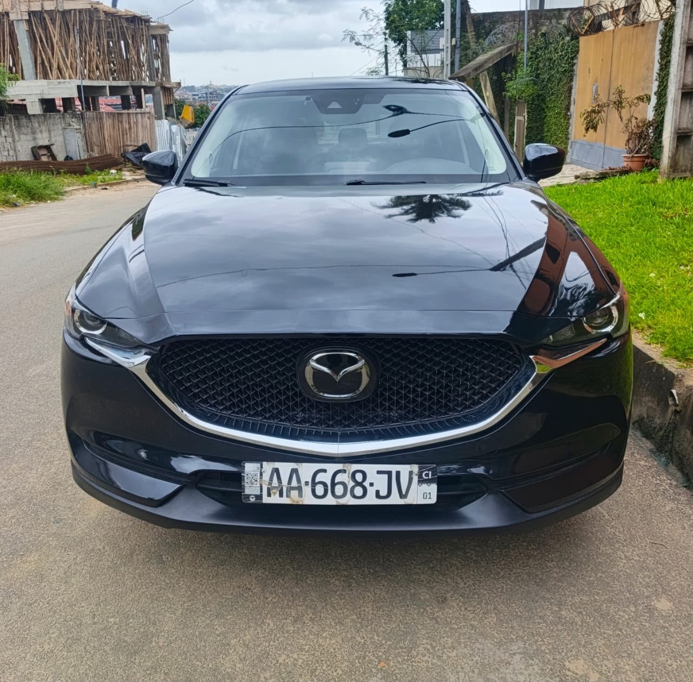

À vendre
Mazda CX-5 SKYACTIV 2019
07/2019 · Essence · Automatique · 128 200 km
13 800 000 FCFA
Année07/2019
VersionSKYACTIV
Kilométrage128 200 km
BoîteAutomatique
CarburantEssence
Cylindres4
DémarrageStart
ClimatisationD’origine
IntérieurCuir
Siège électriqueOui
Prix légèrement négociable.
Mazda CX-5 SKYACTIV, essence 4 cylindres, boîte automatique et démarrage Start. Climatisation d’origine, intérieur cuir et siège électrique. Véhicule d’occasion très propre selon le vendeur.
Contactez TVB CI AUTO pour les informations, la position du véhicule et une visite.